Pre-SPA pensioners¶
This article deals with the valuation of pensioners below State Pension Age within the Pensioners Module in SuperVal.
It discusses how to set up the SuperVal basis files to allow for the correct interaction between the excess pension and the Guaranteed Minimum Pension (GMP) for this group of people. It also provides some more information on the franking options available.
For pensioners over State Pension Age, SuperVal will value the Guaranteed Minimum Pension (GMP) in addition to the pensions specified on the Pensions tab.
This article is based on V9.25 of SuperVal.
Any screenshots from earlier versions are not materially different.
Does the GMP interact with the excess pension at all?¶
Firstly, consider whether the GMP pensions interact with the excess pensions at all.
Take a male pensioner currently aged 60 with a pension of £1,000 pa. Over the 5 years to 65, this pension increases to £1,200 pa with scheme increases. At age 65, he is entitled to a GMP of £500 pa.
Depending on the franking option used his benefits at age 65 could vary between paying all of the GMP (£500) in addition to his £1,200 excess and offsetting all of the GMP against the excess. So his total benefit at 65 could be anything between £1,200 pa and £1,700 pa.
(Note the total benefit at 65 could actually be as low as £500 pa, if for example no excess pension is payable after age 65. This situation might arise if the member has commuted a large amount of pension and opted to have the remaining non-GMP benefit spread over the period to SPA. This document does not deal with such cases. It assumes that the total benefit at SPA does not fall when the GMP comes into payment.)
The graphs below illustrate the potential scenarios:
Scenario 1 None of the GMP is offset. Total pension at SPA increases from £1,200 to £1,700.
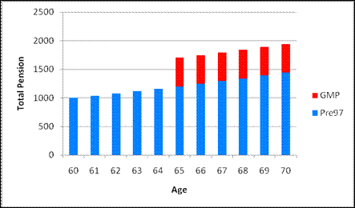
Scenario 2 Some of the GMP is offset against the excess. Total pension at SPA increases to £1,500.
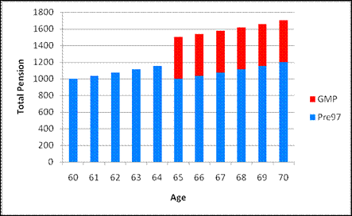
Scenario 3 GMP is completely offset against the excess. Total pension at SPA stays at £1,200.
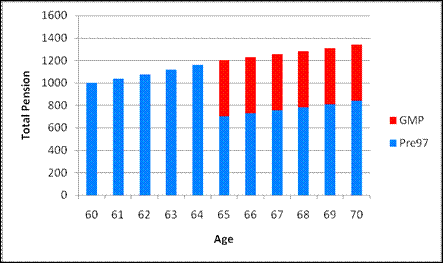
SuperVal can be set-up to value benefits within this range as appropriate. However, where insufficient information is provided it will default to the top end of the range ie it will assume the GMP does NOT interact with the excess at all and so increase the pension at SPA by the amount of the GMP. (This corresponds to scenario 1 above, where the benefit at 65 increases by £500 to £1,700.)
Franking – a quick reminder¶
If members (of a contracted-out scheme) retire before SPA, the pension paid may include some notional GMP. Up until SPA, the pension will be increased in line with Pre-1997 scheme pension increases. However, the GMP portion should have received GMP revaluations which will have been different. The pension will therefore, need to be increased at SPA to allow for the missed revaluations.
This step-up can be given in full ie GMP at SPA – GMP at Retirement. Alternatively, the GMP revaluations can be offset against the increases that have been granted to the pension while it was in payment.
The most common approach is ‘Full Franking’, where the pension from the GMP revaluation is offset against the increases that have been given to the total Pre-1997 pension. ‘No Franking’ is where the GMP revaluations are not offset at all (and so the step-up is given in full). ‘Partial Franking’, is where the GMP revaluations are offset against increases to the (notional) GMP portion of the pension between retirement and SPA.
Note: The member may have left active service before retiring and not yet reached SPA. Therefore the GMP included in the pension may not yet reflect any revaluations from Date of Leaving. SuperVal therefore requires you to tell it what the GMP was at retirement (and at Valuation Date if you want to value benefits using Partial Franking).
Additional data required for Franking calculations¶
In order to calculate benefits at SPA correctly, you’ll need some or all of the following additional data items in your CSV file:
- Pre-1997 Pension(s) at Retirement
-
This is needed to calculate the increase in the Pre-1997 benefit between NRA and SPA.
- Notional GMP at Retirement
-
This is needed in order to determine the increase in the GMP between NRA and SPA and hence the step-up in pension at SPA. This is equal to the GMP at Date of Leaving with any scheme revaluation applied to GMPs between DOL and Retirement Date (if applicable). (This will be entered on the Pensions tab in the Pre-1988/Post-1988 Included at Retirement.)
- Notional GMP at Valuation Date
-
This is equal to the Notional GMP at Retirement plus Pre-1997 scheme excess increases to valuation date. (This will be entered on the Pensions tab in the Pre-1988/Post-1988 Included at Valuation Date.) Note, this is not the same as the standard SuperVal data items of GMP0/GMPE0.†
SuperVal will always require data for the two items above.
If this data isn’t given, it will assume the GMP is added on in full at SPA, i.e. No Franking. It will only require the Notional GMP at Valuation Date when Partial Franking is being applied.
† For pre-SPA members, GMP0 and GMPE0 are the Pre-1988 and Post-1988 GMPs at DOL increased with statutory revaluations (either Fixed or S148) up to the valuation date – SuperVal takes these amounts and then applies any remaining statutory revaluation required between valuation date and SPA (as defined on the Legislation tab).
Basis-file setup¶
Pensioner basis file¶
All of the inputs considered in this document are on either the Pensions tab or the Legislation tab. The relevant inputs are in the screenshots below:
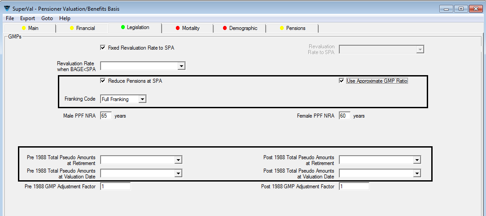
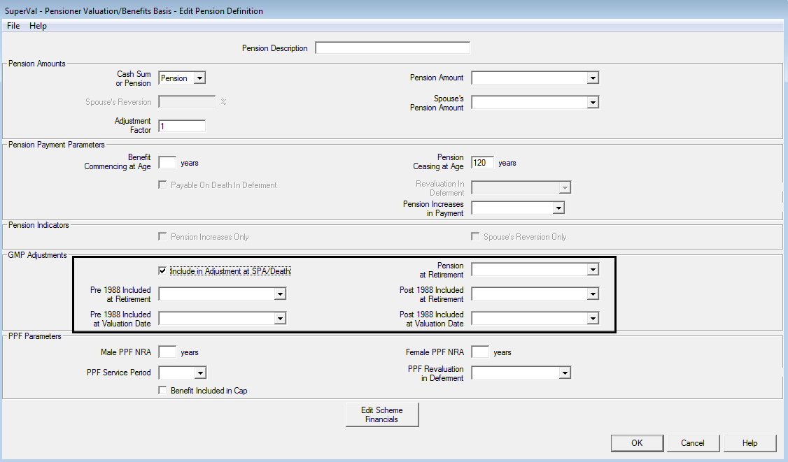
The entries required on each tab depend on what happens with the pensions at SPA and what data you have available.
The flowchart below points users to the relevant SuperVal set-ups required to deal with the majority of cases. Note there are four possible different set-ups shown (with screenshots of both the Legislation and Pensions tab for each). These equate to the most likely scenarios you will be required to value.
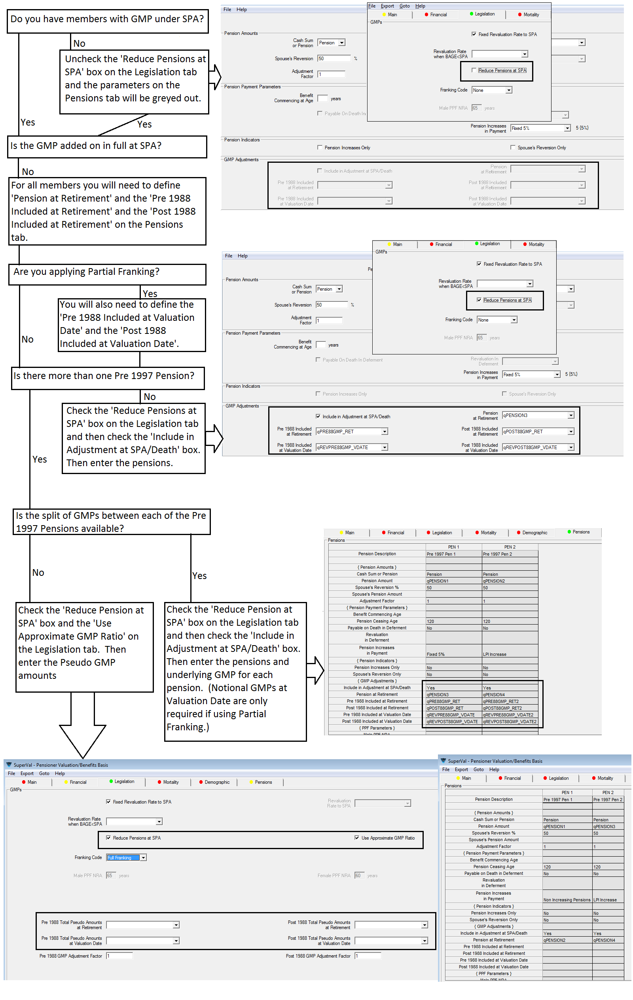
How to ignore franking altogether (scenario 3)¶
This would be similar to using the No Anti Franking Guarantee option that is available in the Actives and Deferreds modules. In some cases, the scheme may not provide any increase in the pension at SPA. (The total pension from SPA will however be subject to a minimum of the GMP at SPA and so there will be a step-up if total Pre-1997 pension is less than the revalued GMP.)
You can value this by giving SuperVal the data that will result in it
calculating a zero step-up for all members. The simplest way to do this
is to calculate the GMP at SPA for each member and to input this as a
data item for Pre-1988/Post-1988 GMP Included at Retirement on the
Pensions tab. To enable these boxes to be visible check both Reduce
Pensions at SPA on the Legislation tab and Include in
Adjustment at SPA/Death on the Pensions tab. Also
set Franking Code on the Legislation tab to None.
SuperVal will derive the step-up by using the standard data items for the GMP ie GMP0 and GMPE0 to calculate GMP at SPA and then subtracting the GMP at Retirement. By entering the GMP at SPA into these fields SuperVal will have the same data for each member and so the step-up in GMP will be calculated as zero.
More than one pre-1997 pension and using pseudo GMPs¶
If there is more than one pre-97 pension and the split of GMP between these different pensions is not known, then you can enter Pseudo GMP information on the Legislation tab to approximate this data. To enable this option, check Use Approximate GMP Ratio on the Legislation tab. You will then be able to enter the Pre- and Post-1988 Total Pseudo GMP amounts at both Retirement and Valuation Date.
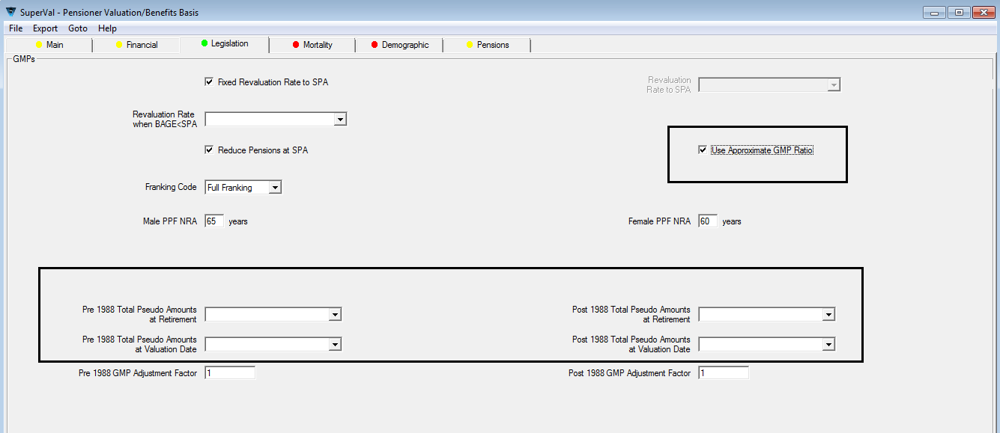
If there is more than one Pre-1997 benefit and you do have the split of GMP for each pension, then enter this data in the appropriate Pension fields on the Pensions tab:
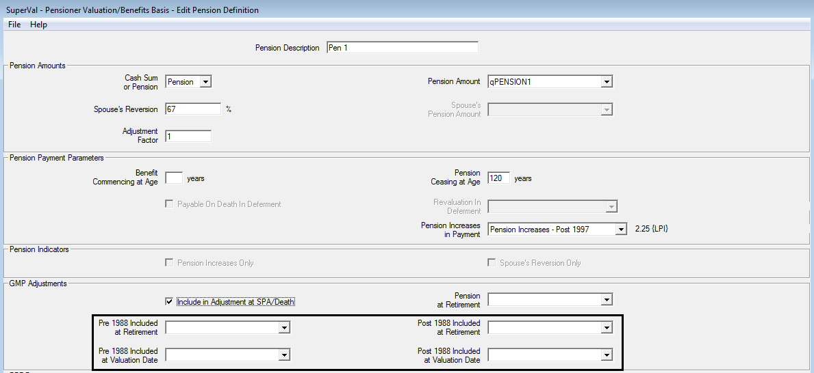
What if the pre-1997 pension at SPA is less than the GMP at SPA?¶
SuperVal currently undervalues the liability if the GMP at SPA is bigger than Pre-1997 pension at SPA.
This is because, when it’s calculating the offset at SPA, it offsets the whole GMP with excess increases, regardless of how big the pre SPA pension is. This is best illustrated by an example:
Say a member aged 64 has pension of £1 pa, but GMP from age 65 is £1,000 p.a.
SuperVal will value liability as:
£1 for life from age 64 (with excess increases in payment)
– £1,000 for life from age 65 (with excess increases in payment)
+ £1,000 for life from age 65 (with GMP increases in payment)
The second item should be limited to £1 but it isn’t. In this instance SuperVal will end up with a negative Pre-1997 liability.
To avoid this you can put the relevant members in a different category, in which you value the Pre-1997 excess as a temporary pension. In the screenshot below, this temporary benefit has been set up as Pension1. The Relevance Rules will automatically grey-out Include in adjustment at SPA/Death and ignore any adjustment.
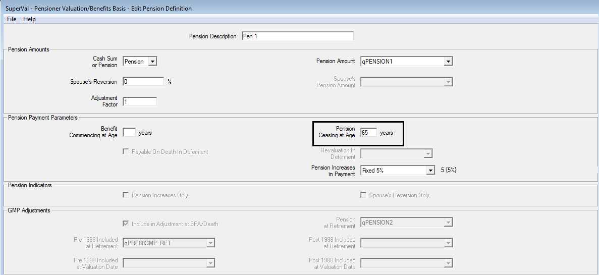
Examples¶
Set out below are a couple of examples of the how the calculations work.
Membership data¶
The following membership data is used.
| Case Study 1 | Case Study 2 | |
|---|---|---|
| Valuation Date | 1 Jan 2013 | 1 Jan 2013 |
| Date Pension Commenced | 1 Jan 2013 | 1 Jan 2013 |
| Date of Leaving | 1 Jan 2008 | 1 Jan 2008 |
| Sex | Male | Male |
| Status | Pensioner | Pensioner |
| Age at Valuation Date (= Age at DPC) | 60 | 60 |
| Pre-1997 Pension at Valuation Date (pa) | £2,600.00 | £2,600.00 (split into two equal pensions) |
| Notional Pre-1988 GMP at Valuation Date (pa) | £500.00† | |
| Notional Post-1988 GMP at Valuation Date (pa) | £1,000.00† | £500.00† |
| Fixed Rate GMP Revaluations (based on Date of Leaving) |
4% | 4% |
| Post-1997 Pension at Valuation Date (pa) | £2,150.00 | £2,150.00 |
† included in Pre-97 Pension amount.
For all cases below, we have shown the total amount of pension payable from SPA, including the split between GMP and excess over GMP. We have also shown how SuperVal will value these benefits.
Case Study 1¶
The entire excess pension receives 5% pa fixed increases in payment. Full Franking is applied at SPA.
Derivation of pensions at SPA¶
| Post-1997 Pension at SPA | £2,744.01 | = £2,150 × 1.055 |
| Pre-1997 Pension Increases from 60 to 65 | £718.33 | = £2,600 × (1.055 -1) |
| Revalued GMP at SPA less Notional GMP at Valuation Date | £169.86 | = £1,000 × (1.044 -1) |
Note the GMP revaluation is assumed Fixed Rate (4.00% based on DOL) and SuperVal misses out the last revaluation before SPA (hence only 4 revaluations here).
Full Franking is being applied so you can offset any increases given to Pre-1997 Pension between Valuation Date and SPA against GMP step-up.
Since Excess increases between Valuation Date and SPA are greater than GMP increases, then no step-up applies.
| Post-1997 Pension | £2,744.01 | |
| GMP | £1,169.86 | |
| Excess Pre-1997 Pension | £2,148.47 | = £2,600.00 – £1,000.00 + max[0, £718.33-£169.86] |
| Total | £6,062.34 |
Note the total can also be calculated as (£2,600 + £2,150) × 1.055
SuperVal set-up¶
Enter data items into the data file as follows:
| Post-1988 Included at Retirement | qPost88GMP_Ret | £1,000 (assumed all Post-88) |
| Pension Amount | qPension2 | £2,600 |
| Pension at Retirement | qPension3 | £2,600 |
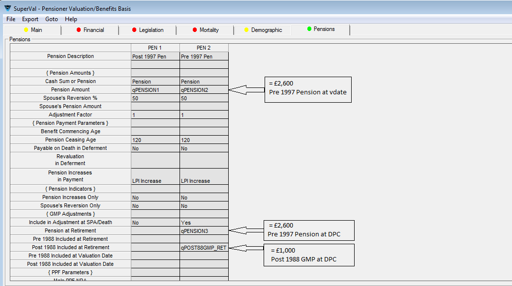
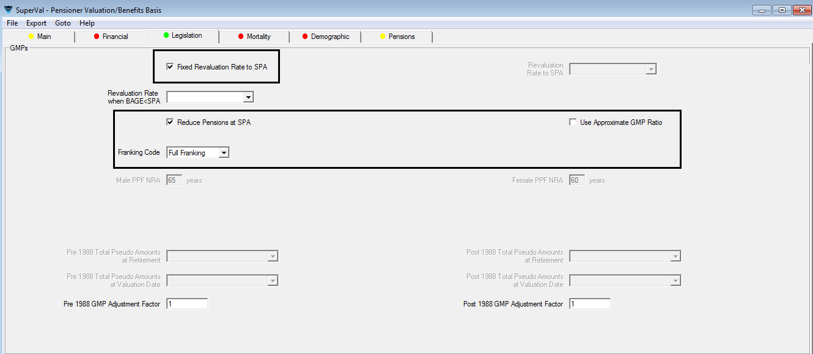
Case Study 2¶
The Pre-1997 excess pension is split into two parts:
-
XS1 (£1,300) receives 0% pa fixed increases and
-
XS2 (£1,300) receives 5% pa fixed increases in payment.
-
Of the £1,000 Notional GMP, £500 is included in XS1 and £500 in XS2.
Derivation of Pensions at SPA¶
| Post-1997 Pension | £2,744.01 | = £2,150 × 1.055 |
| Pre-1997 Pension Increases from 60 to 65 | £359.17 | = £1,300 × (1.055 -1) |
| Revalued GMP at SPA less Notional GMP at Valuation Date | £169.86 | = £1,000 × (1.044 -1) |
Full Franking is being applied so offset any increases given to XS between Valuation Date and SPA against GMP step-up.
Since XS increases between Valuation Date and SPA are greater than GMP increases, then no step-up applies.
| Post-1997 Pension | £2,744.01 | |
| GMP | £1,169.86 | |
| Excess Pre-1997 Pension 1 | £800.00 | = £1,300.00 – £500.00 |
| Excess Pre-1997 Pension 2 | £989.31 | = £1,300.00 – £500.00 + max[0, £359.17 - £169.86] |
| Total | £5,703.18 |
Note the Total can also be calculated as £1,300.00 + (£1,300 + £2,150) × 1.055
SuperVal set-up¶
Enter data items into the data file as follows:
| Pre-1988 Included at Retirement | qPre88GMP_Ret | £500 |
| Post-1988 Included at Retirement | qPost88GMP_Ret | £500 |
| Pension Amount | qPension2/qPension4 | £1,300 |
| Pension at Retirement | qPension3/qPension5 | £1,300 |
The setup of the Legislation tab is exactly the same as Case Study 1. The Pensions tab is as follows:
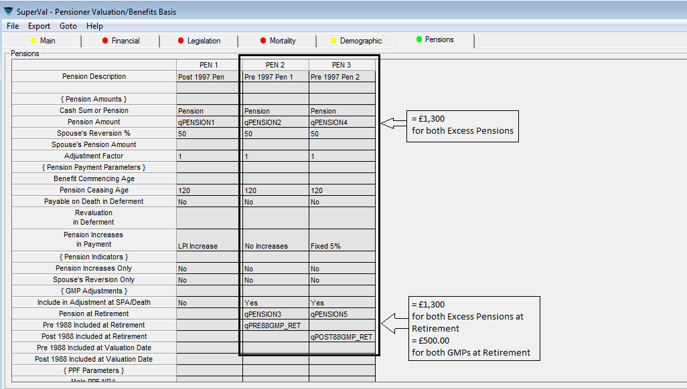